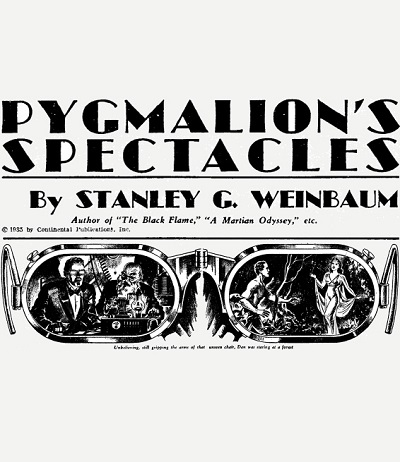

Chapter 1: Introduction to Virtual Reality

1.1 Definition of Virtual Reality, Immersion, Presence
There is no uniform definition for the term “Virtual Reality” (VR) until today. VR originates in science-fiction, where Stanley G. Weinbaum described it 1935 in his short story “Pygmalion’s Spectacles”. The story is about a goggle-based virtual reality system that enables the user to experience holographic, fictional images, touch and smell.
After the first attempts of a technical realization, the term VR was mostly referred to a specific hardware setup consisting of head-mounted displays, headphones and input devices like motion-sensing gloves[1].
A newer definition that is independent from a specific technical realization, was introduced by Steuer [1]. Steuer defined VR as a particular type of experience that is producing a sense of presence in a virtual environment. Presence therefore is the feeling of being there. While presence only describes the subjective response of an user to a VR system, the term “immersion” refers to an objective level on how proper a VR device can stimulate human sensory[2].
For the concern of this tutorial we will restrict to the following definition: Virtual reality is the presentation of a computer simulated environment to our senses in a way, that we experience it as if we were really there[3].
1.2 Modern VR Hardware
The mostly applied VR devices nowadays are head-mounted VR-headsets and virtual reality VR rooms.
These virtual reality rooms called “Cave Automatic Virtual Environment” (CAVE) are setups with a series of projectors and rear projection walls surrounding the user. A head tracking system records his/her viewing direction. This information is used to calculate the corresponding image of the virtual environment which is then provided by the projectors.
Since CAVE systems take a lot of space and requires a high cost hardware they are mostly used in the corporate sector.
Head-mounted VR devices are a lot more user friendly and their availability has increased rapidly for within the last few years. Devices like the Oculus Rift, HTC Vive or Google Cardboard are flooding the private consumer market and are getting applied in the gaming sector, product development, salesmanship and in many other fields. An example for the technical characteristics of a head mounted VR device is given in Chapter 3, introducing the Oculus Rift.
1.3 The Benefits of VR
Besides the ‘wow-effekt’ someone is experiencing when using a VR device for the first time, the actual benefits of VR are partly still unclarified. There are areas, where VR is clearly providing benefit in comparison to any alternatives and there are areas where it is not clear if VR is providing benefits or causing disadvantages.
Some mentionable areas where VR has proved benefit and became widely used are: entertainment, military training and psychotherapy. In all these fields a high level of immersion can induce a sense of presence and thus replace a real experience which might cost more, take more time or would be more dangerous.
The adjacted video is giving an example on how Virtual Reality Exposure Therapy can be used to treat post-traumatic stress disorder.
While the number of applications that benefit greatly from feeling present in a virtual world may be limited, there are also potential benefits from other side effects of high level immersion. The stereoscopic display of a head-mounted VR device could for example provide a better spatial understanding and thus it could improve the understanding of scientific visualizations or virtual prototypes[2]. The usage of a head tracking system increases the total size of the visual field. It enables the user to look around in a natural way while being exposed to information from 360 degree. This could end the annoying information clutter we get when too many windows and graphics are open on a single computer desktop.